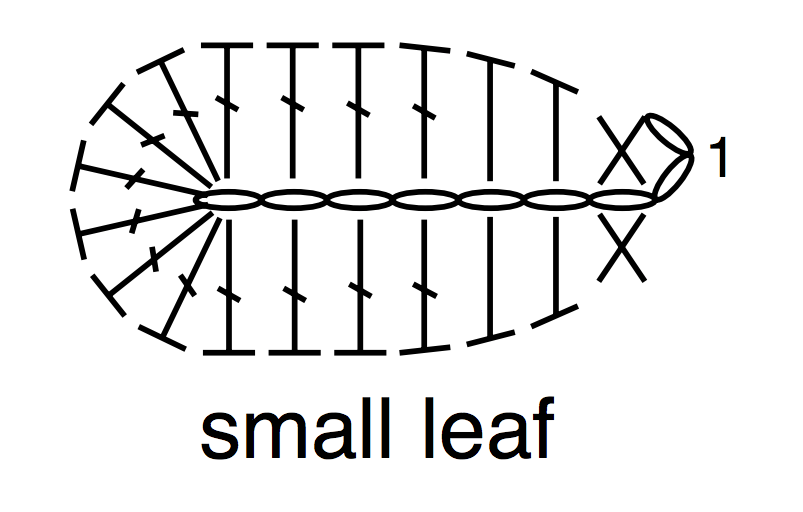

Gambar diatas merupakan bagan simbol untuk merajut. Bagan ini berguna karena menunjukkan
pola rajutan dengan jelas dan ringkas. Umumnya, bagan akan menyertakan kunci di bagian atas atau bawah, dan kunci ini
akan menjelaskan arti setiap simbol.
Bagan tersebut juga harus memiliki panah yang
menunjukkan arah pengerjaan jahitan. Selain panah juga bisa diberi angka 1 sebagai titik awal pengerjaan.
Untuk perajut tangan kanan, panah menunjuk dari kanan ke kiri. Dan untuk perajut tangan kiri, panah menunjuk dari kiri ke kanan.
Selain itu, diagram juga dapat menunjukkan berapa kali tusuk harus dikerjakan dalam satu
baris. Ini dapat ditunjukkan dengan angka di sudut simbol atau dengan garis yang ditarik di
bawah simbol.
Terakhir, diagram simbol rajutan juga akan menunjukkan kapan harus menambah
atau mengurangi tusuk, ditunjukkan dengan tanda plus atau minus.
Seperti contoh diagram pola daun ini

Dalam pola ini diawali dengan simbol oval(chain) sebanyak 9 chain. Kemudian memulai sc pada chain ke 7 (terdapat angka 1 sebagai titik awal pengerjaan), setelah sc membuat hdc dan seterusnya mengikuti pola dari kanan ke kiri.
Pola rajut China memiliki terminologi yang berbeda dengan US dan AS. Apabila rajuters ingin
membuat karya menggunakan pola china, maka harus mengetahui bentuknya. Berikut pola rajut
beserta keterangannya:
X : single crochet / tusuk tunggal
T : half double crochet / setengah tusuk ganda
F : double crochet / tusuk ganda
V : increase / 2 tusuk tunggal di lubang yang sama (untuk memperbesar jumlah chain)
V : decrease / 2 lubang menjadi 1 tusuk tunggal (untuk mengecilkan jumlah chain)
Contoh : Pola dari AS (sc, inc) x 6 akan ditulis seperti 6(x, v)